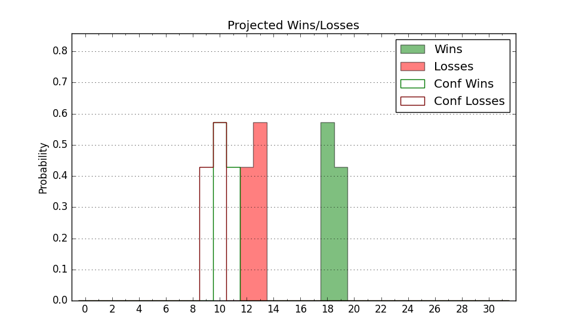

| Home | Game Probabilities | Conferences | Preseason Predictions | Odds Charts | NCAA Tournament |
| City: | Iowa City, Iowa | |
| Conference: | Big Ten (6th)
| |
| Record: | 10-9 (Conf) 18-12 (Overall) | |
| Ratings: | Comp.: 16.4 (47th) Net: 16.4 (47th) Off: 120.1 (16th) Def: 103.7 (146th) SoR: 51.3 (53rd) |
| Remaining | ||||||
|---|---|---|---|---|---|---|
| Date | Opponent | Win Prob | Pred. | |||
| 3/10 | Illinois (14) | 42.9% | L 87-90 | |||
| Previous | Game Score | |||||
| Date | Opponent | Win Prob | Result | Off | Def | Net |
| 11/7 | North Dakota (226) | 93.9% | W 110-68 | 7.5 | 15.8 | 23.3 |
| 11/10 | Alabama St. (316) | 97.5% | W 98-67 | 5.1 | -1.3 | 3.8 |
| 11/14 | @Creighton (8) | 14.8% | L 84-92 | 4.9 | 2.9 | 7.8 |
| 11/17 | Arkansas St. (160) | 89.7% | W 88-74 | -10.6 | 11.4 | 0.7 |
| 11/23 | (N) Oklahoma (35) | 44.4% | L 67-79 | -18.9 | 4.2 | -14.7 |
| 11/24 | (N) Seton Hall (54) | 53.3% | W 85-72 | 7.3 | 9.5 | 16.8 |
| 11/29 | North Florida (251) | 95.0% | W 103-78 | 3.9 | -1.6 | 2.3 |
| 12/4 | @Purdue (2) | 8.2% | L 68-87 | -3.1 | -6.1 | -9.1 |
| 12/7 | @Iowa St. (11) | 15.9% | L 65-90 | -13.0 | -6.1 | -19.1 |
| 12/10 | Michigan (118) | 84.0% | L 80-90 | -15.2 | -16.2 | -31.4 |
| 12/16 | (N) Florida A&M (342) | 97.3% | W 88-52 | -16.0 | 22.8 | 6.8 |
| 12/20 | UMBC (282) | 96.2% | W 103-81 | -3.7 | -4.6 | -8.3 |
| 12/29 | Northern Illinois (297) | 96.7% | W 103-74 | -11.9 | 7.4 | -4.4 |
| 1/2 | @Wisconsin (22) | 24.4% | L 72-83 | -17.3 | 7.5 | -9.8 |
| 1/6 | Rutgers (96) | 79.3% | W 86-77 | -1.0 | -4.0 | -5.0 |
| 1/12 | Nebraska (42) | 61.7% | W 94-76 | 20.4 | -0.4 | 20.0 |
| 1/15 | @Minnesota (75) | 45.9% | W 86-77 | 3.7 | 9.4 | 13.1 |
| 1/20 | Purdue (2) | 23.3% | L 70-84 | -10.1 | 0.5 | -9.7 |
| 1/24 | Maryland (62) | 69.5% | L 67-69 | -12.7 | -3.5 | -16.2 |
| 1/27 | @Michigan (118) | 60.6% | W 88-78 | 8.7 | -2.3 | 6.5 |
| 1/30 | @Indiana (91) | 50.2% | L 68-74 | -8.3 | -2.1 | -10.4 |
| 2/2 | Ohio St. (51) | 67.4% | W 79-77 | 7.0 | -10.2 | -3.2 |
| 2/8 | @Penn St. (83) | 48.4% | L 79-89 | -1.5 | -16.9 | -18.4 |
| 2/11 | Minnesota (75) | 74.3% | W 90-85 | 9.4 | -12.9 | -3.6 |
| 2/14 | @Maryland (62) | 40.1% | L 66-78 | -5.5 | -13.2 | -18.7 |
| 2/17 | Wisconsin (22) | 52.4% | W 88-86 | 4.9 | -1.3 | 3.6 |
| 2/20 | @Michigan St. (20) | 24.0% | W 78-71 | 17.9 | 4.8 | 22.7 |
| 2/24 | @Illinois (14) | 18.1% | L 85-95 | 4.3 | -5.7 | -1.4 |
| 2/27 | Penn St. (83) | 76.1% | W 90-81 | -1.8 | 2.9 | 1.0 |
| 3/2 | @Northwestern (48) | 35.9% | W 87-80 | 24.5 | -11.0 | 13.4 |
| Stats & Trends | |||||
|---|---|---|---|---|---|
| Current | Day | Week | Month | Season | |
| Composite | 16.4 | +0.0 | +0.6 | +0.8 | -1.3 |
| Comp Rank | 47 | -- | +3 | +5 | -16 |
| Net Efficiency | 16.4 | +0.0 | +0.6 | +0.8 | -- |
| Net Rank | 47 | -- | +3 | +7 | -- |
| Off Efficiency | 120.1 | +0.0 | +0.9 | +3.2 | -- |
| Off Rank | 16 | -- | +1 | +10 | -- |
| Def Efficiency | 103.7 | +0.0 | -0.3 | -2.4 | -- |
| Def Rank | 146 | -- | -4 | -30 | -- |
| SoS Rank | 29 | +1 | +4 | +17 | -- |
| Exp. Wins | 18.4 | +0.0 | +0.7 | +1.4 | -0.1 |
| Exp. Conf Wins | 10.4 | +0.0 | +0.7 | +1.4 | +0.3 |
| Conf Champ Prob | 0.0 | -- | -- | -- | -4.4 |

| Advanced Stats | ||
|---|---|---|
| Stat | Value | Rank |
| Off Eff FG % | 0.561 | 31 |
| Off Ast Ratio | 0.196 | 8 |
| Off ORB% | 0.291 | 137 |
| Off TO Rate | 0.114 | 6 |
| Off FT Ratio | 0.370 | 79 |
| Def Eff FG % | 0.493 | 124 |
| Def Ast Ratio | 0.144 | 182 |
| Def ORB% | 0.280 | 181 |
| Def TO Rate | 0.153 | 134 |
| Def FT Ratio | 0.298 | 115 |